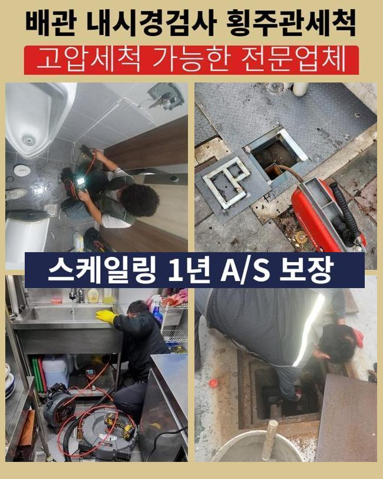
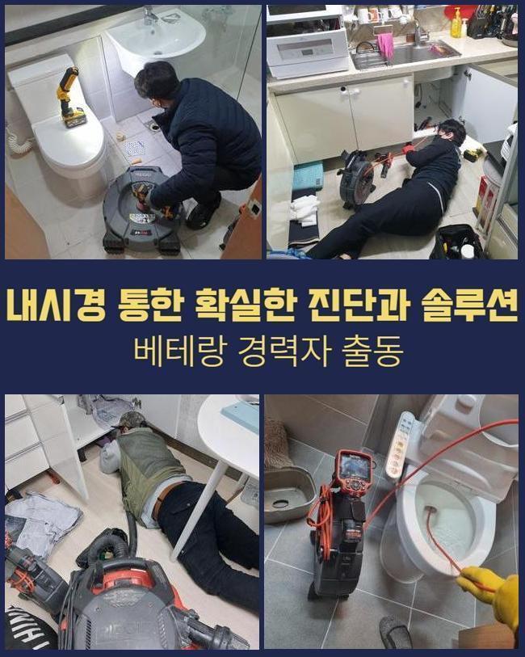
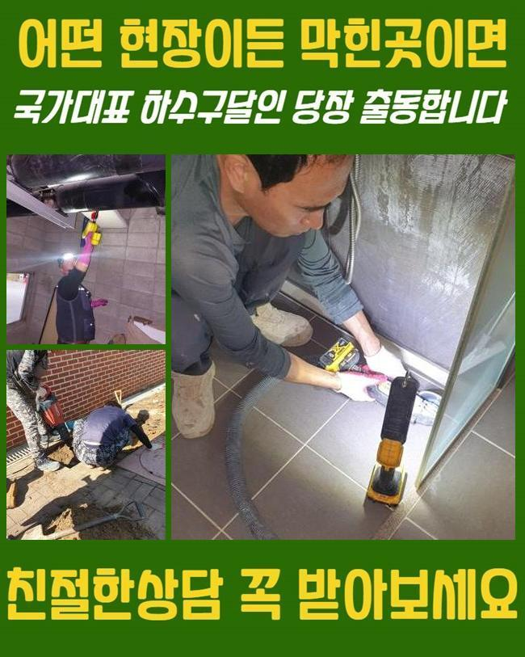
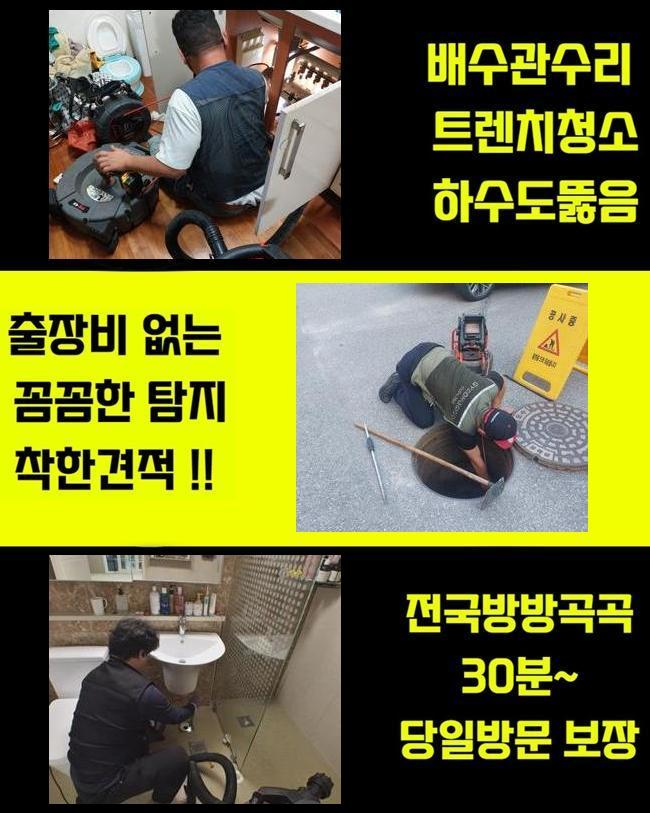
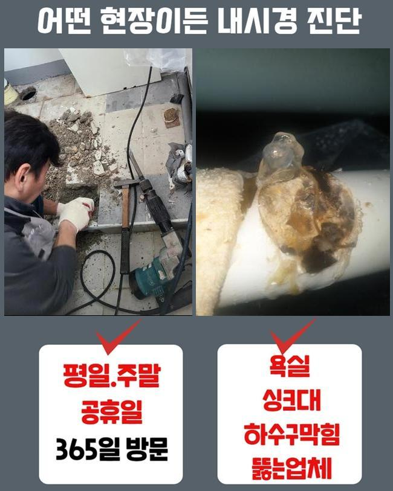
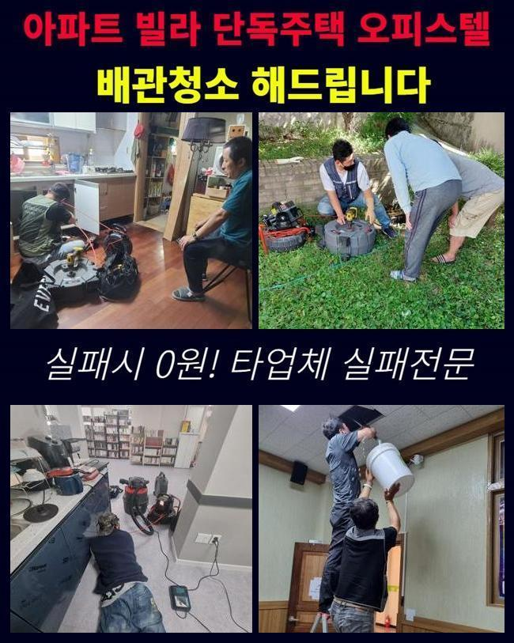

🏠 대원동대변기역류 갈곶동 집수정청소 부속수리
용인 갈곶동 변기막힘 전문 시공 후기

📋 작업 개요
- 위치: 용인 갈곶동, 갈곶동, 용인
- 서비스 유형: 변기막힘, 하수구막힘, 배관막힘, 집수정막힘, 누수수리, 역류해결, 뚫는업체, 배관청소, 고압세척, 설비공사, 악취차단
- 작업 일시: 2025. 1. 22. 16:23
- 업체명: 하수구수사대 (010-5615-2118)
🔍 문제 상황
대원동대변기역류 갈곶동 집수정청소 부속수리
배관막힘은 한번쯤은 경험하셨으리라 생각하고 있어요
급작스럽게 화장실 변기나 주방시설에서 생기는 관로막힘은 평상시 생활에 고충을 유발하게 되겠죠
그런데 개수대에서는 왜 막힘이 일어나는것인지 알아볼 필요가 있겠죠
개수대는 요리과정에서 생겨나는 여러종류의 노폐물과 기름슬러지와 같은 것들이 관에 누증되어 정체가 생기는거죠
그러한 사태가 계속되면 배수문제를 비롯하여 오취가 올라오게 되고 시간의 흐름에 따라서 하수관이 노후화되어 누수까지 나타날수 있겠죠
통상 해당하는 고장이 생겼다면 시중의 제품을 사용하여 정리하려고 하시죠
그렇지만 그런 방안은 잠시간의 물길만 만들뿐 본원적인 요인을 처리하지않으면 동일한 정황이 재발하게 되겠죠
막힘 사유가 관로 하부에 있다면 맨눈으로 그것을 보거나 정리하기 힘들기 때문이죠
또 그릇된 방식으로 시공을 한다면 외려 사태를 악화되게 만들어 잔재들을 적절히 소멸시키지 못할수가 있죠
이런 이유들로 배수관 정체가 생겼다면 배관전문업체에게 의뢰해서 정확하고 온전히 처치하는게 바람직합니다

🔎 원인 분석
💡 전문가 진단: 정밀 진단 장비를 사용하여 슬러지의 고착 여부를 판명하고 타격/세척 작업을 실시했습니다.
그저께 저희들은 하수관막힘 관련 수선의뢰를 받았는데요
의뢰자께서는 욕실에서 생긴 배수관정체로 역류 및 악취발생이 심하여 평범한 삶에 커다란 지장을 감당하는 상황이었죠
냄새가 너무 심해서 생활을 이어나가기가 힘겨웠고 역류현상까지 생겨 가정안이 더럽혀지는 정황에 닿게 됐다 말하셨습니다
손님분의 괴로움을 조속히 없애드리려 곧장 고객님댁으로 이동했죠
댁에 방문한뒤 의뢰인과 이야기를 나누고 사태를 자세히 검사했습니다
의뢰자께서는 욕실에서 물빠짐이 되지않고 역류하는 상황까지 발발하여 내부가 오염된 상황이라면서 빠른 해결을 원하셨죠
10일전부터 해당 정황이 생겼는데 놔뒀더니 더욱더 악화한 상황이었죠
이럴때에는 간단히 통수를 진행하는걸로는 상황을 극복하기 어려워요
이물들이 파이프에 강력히 고착화되어 있는거라서 내측의 상황을 정밀하게 분석하고 합리적인 계획을 세워 공정에 임해야 됩니다
깊은지점에서 발현된 고장은 직관적으로 검증하기 어려울 때가 많답니다
그래서 저희 측은 내시경기기를 사용해 파이프안쪽의 모습을 세밀하게 조사하는 공정에 들어갔어요
배관카메라로 확인하니 관로안에는 장기간 적층된 석회물질들과 기름때들이 엉겨서 통로를 완전하게 가로막는 상황이었어요

🔧 작업 과정
거기에 더해 잔존물들이 바위처럼 단단해져 단순하게 물세척만해서는 정리가 어려웠답니다
배관관찰을 끝낸후에 분쇄기기를 이용해서 관내에 체류하는 오물들을 세척하는 일을 속행하였습니다
샤프트 기계는 배관안에 고착화된 이물들을 효율적으로 부수고 소제하는 장비로 내부 침전물들이 움직이지 않는 상황에서 지대한 영향력을 끼치죠
해당 기기는 회전력으로 잔재들을 미세하게 분쇄해서 하수관에 부착된 단단한 유분찌꺼기나 석회물질 등을 안전히 정리할수 있죠
그렇지만 힘을 과하게 가하여 공사를 진행한다면 관이 고장날수도 있으므로 전문적 테크닉과 주의깊은 시공이 요망되죠
금번 내방드린 장소는 또한 침전물들이 배관에 강력하게 체류하고있어 한 두차례의 가동만으로는 소제하기 힘들었답니다
주위를 둘러싼 백회물질은 한층 그런 형편을 악화하게 만들었어요
그래서 저희 측은 고압세정기기와 샤프트기기를 병행 사용하면서 잔재들을 소제하고 적절하게 제거하는 작업을 진행하였던 거죠
고압으로 슬러지를 제거할때엔 잔재들이 집안으로 전이되지 않게끔 신경써야 합니다
이물들이 퍼져나가 주위가 심히 오염된다면 정리하기 힘들어질수도 있기 때문에 각별한 주의가 요망되죠
그렇기 때문에 시공하는 과정에서 해당되는 문제들을 막으려 보양업무를 선행했으며 고객께서 우려하지 않으시도록 안전하게 업무를 진행했죠
슬러지를 소멸시키고 다시금 배관내시경을 투입하여 관을 진단해보았습니다
여전히 제거가 안된 석회물질이나 누수문제 등을 검사하는건 굉장히 중대한 업무입니다
금번의 업무에서는 수차례 배수관 안쪽을 검사하고 연쇄적으로 발발하기 쉬운 문제들을 사전에 차단했습니다
이물들이 전면적으로 정리된걸 파악한뒤에 수돗물을 내려보내며 온전히 뚫렸는지 검사해 보았답니다
신속하게 물이 빠지는걸 두눈으로 확인하였어요
배수관으로 수돗물이 원활하게 빠져나가는 걸 의뢰인분도 확인하셨고 완전하게 고쳤다는걸 확인했어요
사태를 방치하는 바람에 이물들이 더욱더 증가한다면 아래층으로 배관문제가 전이될수 있죠
그러면 고쳐야할 요소가 커질것이 자명하므로 미리 검사를 받아보시는게 좋아요


✅ 작업 완료
또 하수구막힘은 우리의 일상생활에 트러블을 일으키기에 가급적이면 재빠르게 정리하는게 좋죠
관로막힘 상황이 길어진다면 고약한 냄새는 물론 배관손상으로 야기된 누수증상까지 생겨날수 있단 사실도 생각해야 돼요
공사하기 전엔 필수적으로 합당한 수리기기를 소지해야 하죠
그것이 미비되면 검사를 적절히 하지못하는 상황이 발현되어 얼마안가 재발상황이 발발할수 있죠
갑작스럽게 발생된 배관정체로 진단이 필요하다면 편안히 저희쪽에 의뢰해주시길 바라요



⚠️ 베란다 누수 및 방수 관리 방법
- ✅ 비가 많이 올 때 창틀 주변이나 아래층 천장에 얼룩이 생기는지 정기적으로 확인해 보세요.
- ✅ 우수관 주변 실리콘 마감이 들뜨거나 깨진 틈새가 있는지 손상 여부를 수시로 체크하세요.
- ✅ 베란다 바닥 타일의 줄눈(메지)이 소실되면 그 틈으로 물이 침투하여 누수가 유발됩니다.
- ✅ 누수 의심 증상 발견 시 방치하면 아래층 손실이 커지므로 즉시 전문가의 진단을 받으십시오.
💡 핵심 정리
- 확실한 장비 작업(내시경 점검 및 샤프트 스케일링)으로 원인을 뿌리 뽑습니다.
- 작업 후 1년 이내에 동일한 부위 재발 시 100% 무상 A/S 서비스를 보장합니다.
- 서울 · 경기 · 인천 전 지역에 24시간 언제든 긴급 출동할 수 있도록 항시 대기 중입니다.
❓ 자주 묻는 질문 (FAQ)
🚨 용인 갈곶동 변기막힘 문제로 고민이신가요?
정확한 원인 진단과 확실한 시공으로 재발 없는 해결을 약속드립니다.
24시간 긴급 출동 | 서울 · 경기 · 인천 전지역 | 1년 내 재발 시 무상 A/S